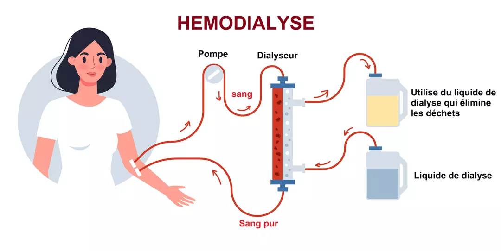
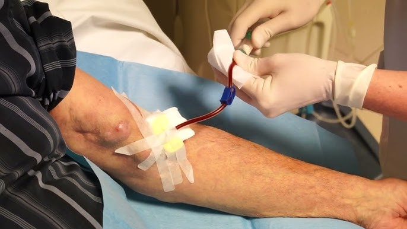
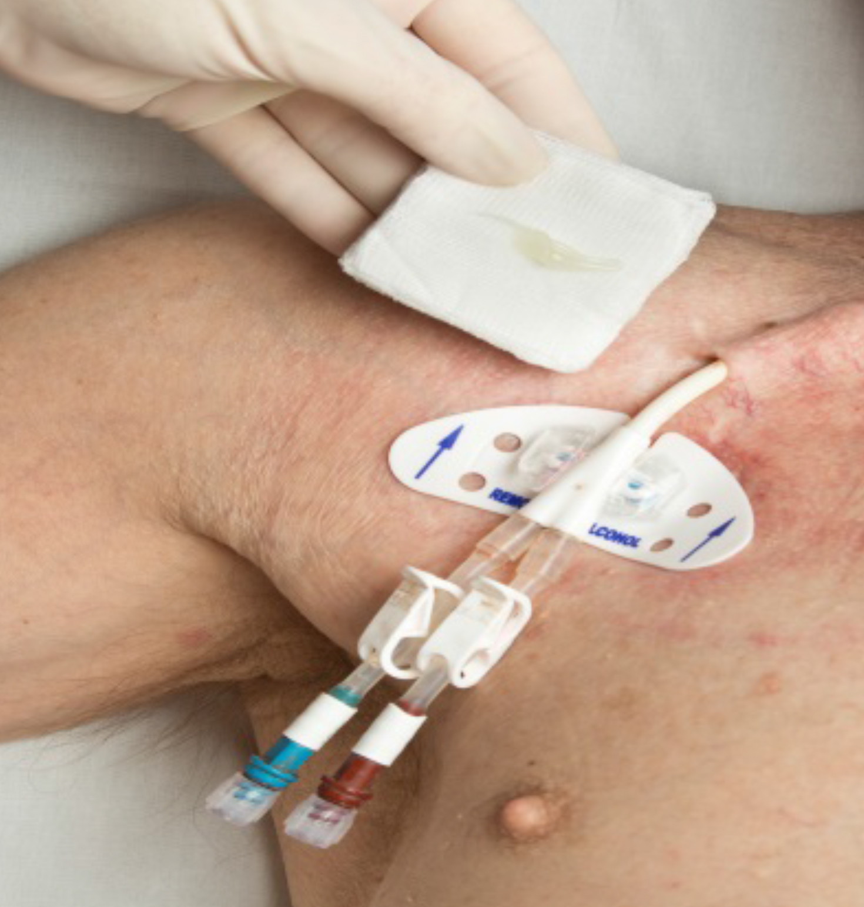
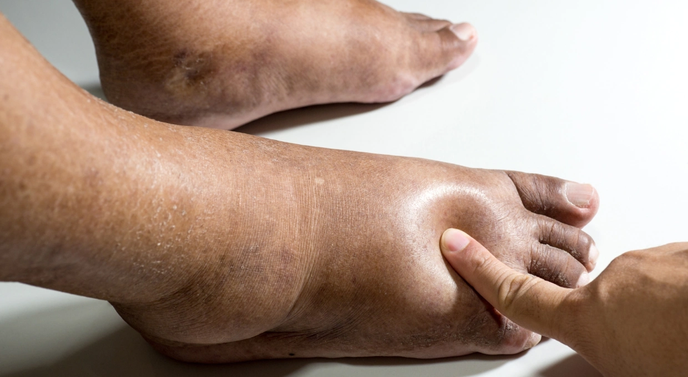
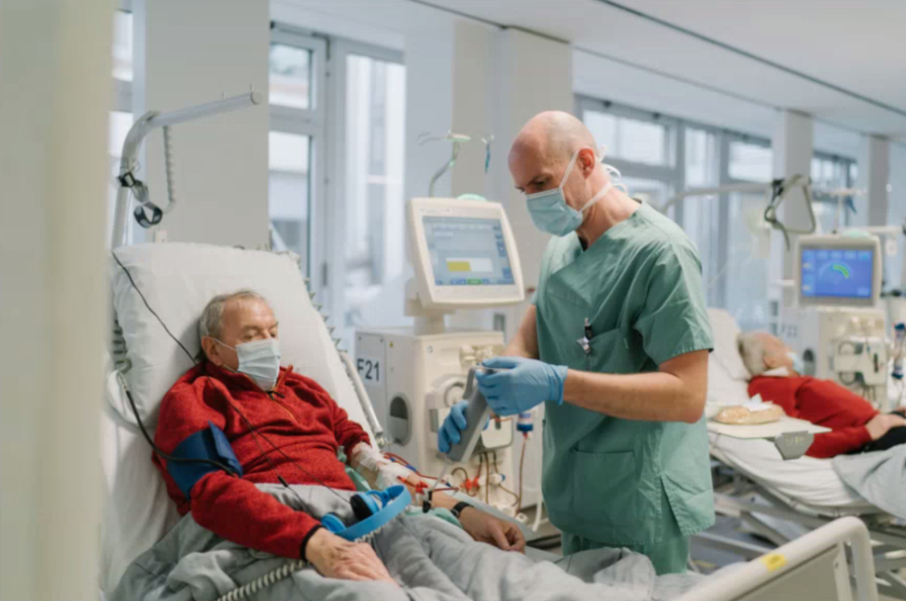
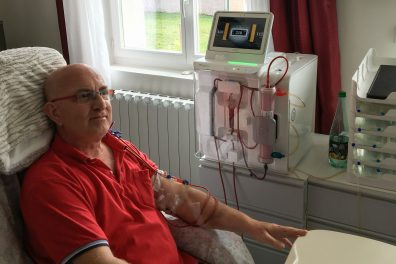
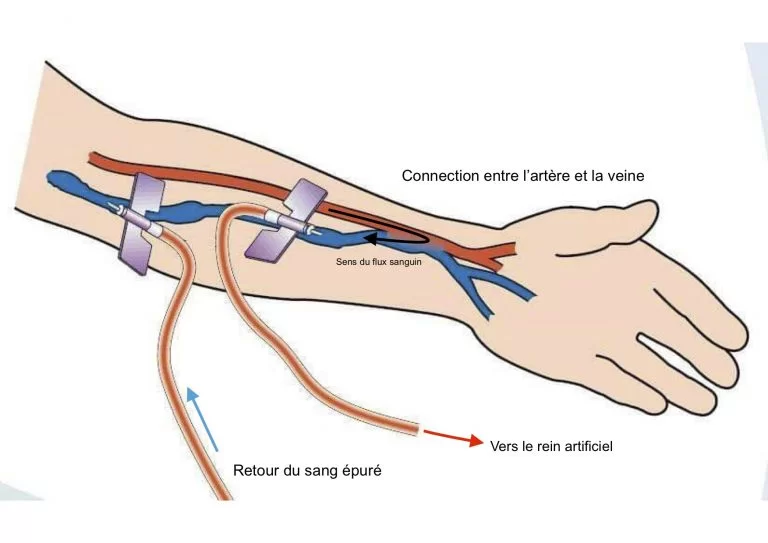

Comprenez le rôle de ce traitement et son fonctionnement.
L’hémodialyse est un traitement médical qui remplace les fonctions de filtration des reins défaillants. Elle permet d’éliminer les déchets toxiques et l’excès d’eau dans le sang grâce à une machine de dialyse (appelée générateur), qui agit comme un rein artificiel.
En général, ce traitement est réalisé trois fois par semaine, pendant 4 heures, et permet de conserver une qualité de vie.
Schéma de l'hémodialyse

Comment fonctionne l’hémodialyse ?
Le sang est prélevé dans le corps, filtré à travers un rein artificiel, puis réinjecté. Pour cela, il faut un accès permanent à la circulation sanguine, obtenu par l’un des deux moyens suivants :

Fistule artério-veineuse (FAV)

Cathéter veineux central
Qu’est-ce que le « poids sec » ?
En dialyse, le poids sec correspond au poids idéal du patient après une séance,
une fois que tout l’excès d’eau a été retiré. Ce poids est estimé par le néphrologue et adapté à la morphologie du patient.
En effet, comme les reins ne produisent plus d’urine, de l’eau s’accumule entre les séances :
on parle de surcharge hydrique.
⚠️ Risques de la surcharge hydrique

Œdèmes (gonflements)
Essoufflement
Hypertension
🎯 Objectif du poids sec
L’objectif est d’atteindre ce poids sec à chaque séance, afin d’éviter les complications liées à l’excès d’eau.
Avant et après chaque dialyse, vous serez pesé pour adapter le volume à retirer lors du traitement.
Les différentes modalités d'hémodialyse

Hémodialyse en centre
Chaque traitement est appelé une séance de dialyse.
Les séances ont lieu 3 fois par semaine, durant en moyenne 4 heures.
Le transport est pris en charge par la Sécurité sociale.
Le centre favorise le lien social.
En dehors des séances, vous reprenez vos activités habituelles.

Hémodialyse à domicile
Les séances sont plus courtes (2 à 3h) mais plus fréquentes (5 à 7 fois par semaine).
Offre une qualité de dialyse optimale.
Une formation spécialisée permet l’autonomie.
Moins de fatigue post-séance, meilleure qualité de vie.
Régime souvent moins contraignant.
Permet de conserver liberté et autonomie.
Vous vous sentez prêt à tester vos connaissances ?
La fistule artério-veineuse est une intervention chirurgicale qui consiste à connecter une
artère et une veine de l’avant-bras ou du bras.
Cette opération est généralement réalisée sous anesthésie locale.
Elle doit être effectuée plusieurs mois avant la mise en dialyse, afin
qu’elle soit bien cicatrisée et prête à être utilisée lors des séances.
Avant l’intervention
Un examen clinique est réalisé pour évaluer la qualité des vaisseaux sanguins et savoir de quel côté la fistule sera crée. Il est complété par une
échographie doppler (ou cartographie de fistule) des deux bras pour confirmer
leur qualité.
Après l’intervention
Environ un mois après la création de la fistule, un nouveau doppler est effectuée
pour vérifier son bon fonctionnement.
Lors des séances de dialyse
Une pommade anesthésiante est appliquée une heure avant la séance sur le bras porteur de la fistule.
Deux aiguilles sont utilisées : l’une pour prélever le sang, l’autre pour le réinjecter après filtration.
Pourquoi la FAV est-elle privilégiée ?
Elle présente moins de risques d’infection que les autres accès.
Sa durée de vie est plus longue que celle des cathéters.
Schéma du fistule artério-veineuse

×
💉 Le cathéter veineux central
Le cathéter d’hémodialyse est un tube souple inséré dans une grosse veine,
généralement au niveau du cou (veine jugulaire) ou parfois dans l’aine.
Il possède deux branches extériorisées : l’une pour aspirer le sang, l’autre pour le restituer après filtration.
Utilisation du cathéter
Si la fistule n’est pas encore utilisable.
Si l’état veineux ne permet pas la création d’une fistule.
En urgence, si aucune fistule n’est encore disponible.
Mise en place
Le cathéter est posé en milieu hospitalier, sous anesthésie locale, par un chirurgien ou un néphrologue.
C’est une procédure stérile, nécessitant une surveillance rigoureuse pour limiter les infections.
Deux types de cathéters
Court terme : en urgence ou en attente de maturation de la fistule.
Long terme : utilisés pendant plusieurs mois, parfois des années.
Décision médicale
C’est le néphrologue qui détermine l’indication du cathéter en fonction de la situation clinique du patient.